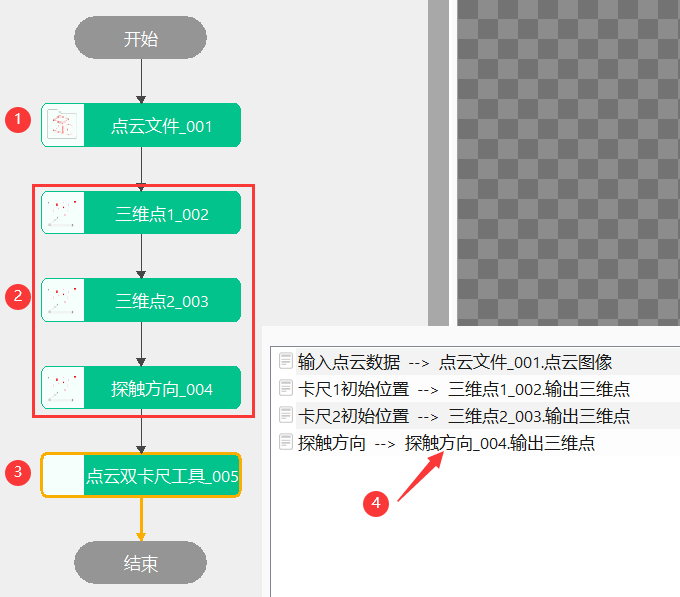

点云双卡尺工具主要根据三维点的初始位置、测量方向，探测点云图上的三维点，进而计算该三维点之间的长度、高度等，主要应用于工件尺寸测量，如对工件厚度、长宽、圆柱外径、圆孔内径等进行测量。
模拟现实中探针测量数据的场景，对工件厚度、长宽、圆柱外径、圆孔内径等进行测量；
添加“点云双卡尺工具”，并根据要求链接相关数据链，如图3.1所示；

无
| 参数名称 | 参数描述 |
|---|---|
| 输入点云数据 | 输入待测量的点云数据 |
| 卡尺1初始位置 | 卡尺1初始位置，在此位置开始位置1的探测 |
| 卡尺2初始位置 | 卡尺2初始位置，在此位置开始位置2的探测 |
| 探触方向 | 卡尺测量方向，卡尺沿该方向与点云数据接触取点 |
| 参数名称 | 参数描述 |
|---|---|
| 卡尺类型 | 包括三种：外卡尺、内卡尺，深度卡尺 |
| 卡点搜索方式 | 包括两种：光线交叉式、接触式；光线交叉式：将搜索区域内的点云拟合平面，求线面交点作为候选点；圆盘接触式：通过构建圆面，与候选点云接触，将接触到第一个点作为候选点 |
| 搜索半径 | 左右卡尺垂直于测量方向定义的搜索区域,范围为(0，10000] |
| 搜索深度 | 左右卡尺在初始位置沿测量方向搜索的最大距离,范围为(0，10000] |
| 是否自动修正测量方向 | 当产品位置存在偏移，建议启用该参数，若位置相对固定则不启用该参数，避免影响测量结果 |
| 是否自动修正卡尺2位置 | 如需保证卡尺1和卡尺2位置位于沿测量方向的同一直线上，则启用该参数。注意此时卡尺2位置会与实际输入位置不同，如需固定卡尺2位置，则不启用该参数 |
| 参数名称 | 参数描述 |
|---|---|
| 距离结果 | 测量结果 |
| 卡点坐标数组 | 使用卡尺工具获取的探测点的三维坐标 |
| 卡点坐标1 | 指探触点接触时获取的三维点1 |
| 卡点坐标2 | 指探触点接触时获取的三维点2 |
| 参数名称 | 参数描述 |
|---|---|
| 距离结果 | 测量结果 |
| 卡点坐标数组 | 使用卡尺工具获取的探测点的三维坐标 |
| 卡点坐标1 | 指探触点接触时获取的三维点1 |
| 卡点坐标2 | 指探触点接触时获取的三维点2 |
| 执行结果 | 工具执行结果 |
| 执行时间 | 工具执行时间 |
参见“\Samples\3D\点云\点云卡尺工具.gvp”。
探触方向：即卡尺测量方向，卡尺沿该方向与点云数据接触取点；
搜索深度：搜索深度为左右在卡尺初始位置沿测量方向搜索的最大距离，如图7_1所示；
搜索半径：搜索半径为左右卡尺垂直于测量方向定义的搜索区域半径，如图7_1所示；

卡点搜索方式：包括两种：光线交叉式、接触式；光线交叉式：将搜索区域内的点云拟合平面，求线面交点作为候选点；圆盘接触式：通过构建圆面，与候选点云接触，将接触到第一个点作为候选点，如图7_2所示为两种搜索方式的示意图；
自动修正测量方向：当产品位置存在偏移，建议启用该参数，若位置相对固定则不启用该参数，避免影响测量结果；

自动修正卡尺2位置：如需保证卡尺1和卡尺2位置位于沿测量方向的同一直线上，则启用该参数。注意此时卡尺2位置会与实际输入位置不同，如需固定卡尺2位置，则不启用该参数；